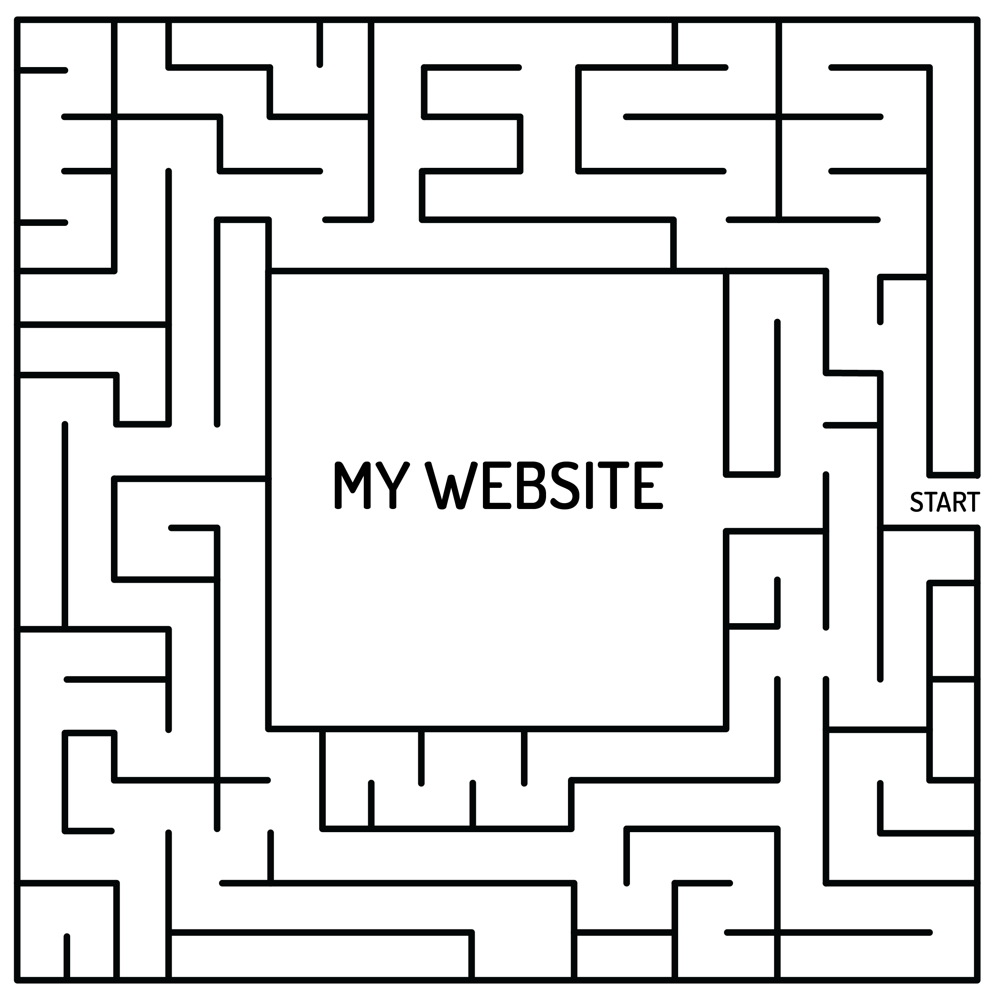

Laurel Schwulst advocates for individual websites over social media because websites present individuals for more freedom whereas presenting yourself using social media can be restrictive. I agree with Schwulst that having a websites over social media for individuals to build their online presence. Social media essentially is a website within a website which comes with some lack of freedom. You can imagine that having a website is like being the CEO or president of a company you get to make the decisions, create products/services and ideas without having to check in with someone or get constant approval. Whereas having social media is like working for a company as an employee, you still have freedom to create and develop but would always be under an umbrella which would limit the possibilities. Social media companies mission is very different because they want to make a profit so they will develop in a way that helps their mission which can end up in them overlooking everyday user needs. Schwulst mentions, “websites…they’re both subject and object at once.” In other words websites are the creation and creation at once which is a cool concept. You get to define the identity and message the website stands for and that has endless capabilities. Overall, social media helps us connect with others faster and create our online identities but a website is anything and everything you want it to be with no locks too unlock or doors to knock.
To me a website is like a maze. You create a complex system which people can interact with and go through an experience. A website is also a complex system with many links and pathways that get you from one place to another just as a maze gets you from start to finish. The pathway you take to explore the website is dependent on the user just like you can explore the maze anyway you want.
